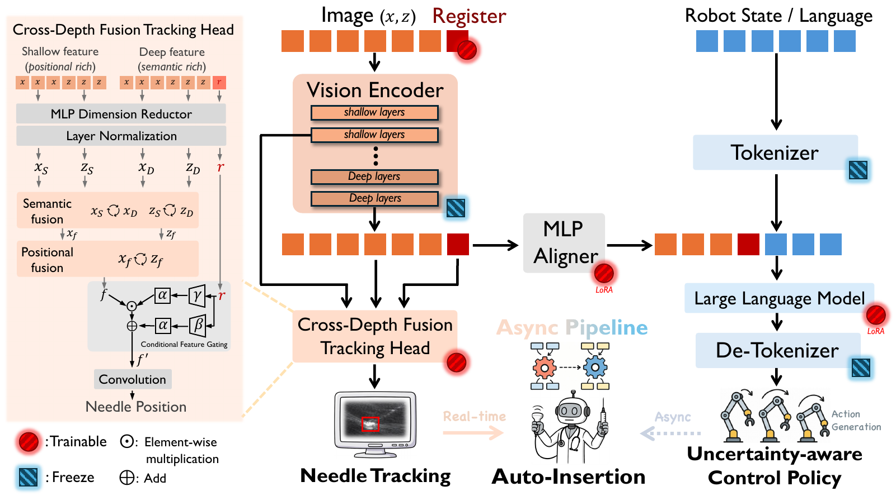
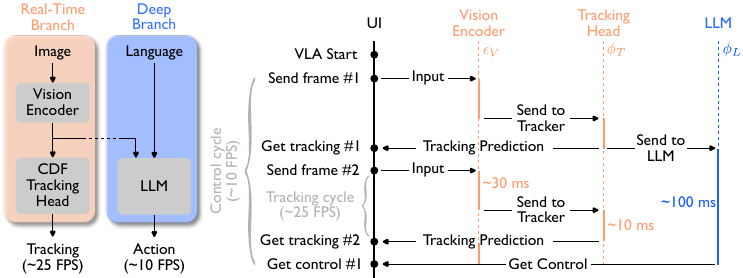

Input
Technology
The intelligence behind SonoPilot
A closed-loop system that observes ultrasound, understands needle state and instructions, and converts that understanding into adaptive robotic action.
PerceptionVLA modelUncertaintyAsynchronous control
System overview
Observe. Understand. Act. Observe.
Like a human operator, SonoPilot repeatedly turns visual feedback into an estimated needle state, an action, and a new observation.
Perceive
Needle state
Understand
Vision-language-action model
Act
Robotic action
World
Environment changes
↖ continuous visual feedback loop ↙
Vision-language-action model
From pixels and instructions to robot commands
The system adapts a compact Qwen2.5-VL 3B model with a Register, visual features, robot state, and language instruction to generate actions.

Visual input
See the needle
Ultrasound frames pass through the vision encoder while the tracking head maintains a structured needle-position estimate.
Context
Join state and language
An MLP aligner brings visual features together with robot state and language instructions for large-model reasoning.
Output
Generate action
The model produces robotic action outputs for insertion angle, needle speed, probe motion, or a stop decision.
Real-time needle perception
Cross-depth fusion tracking
The tracking head combines shallow positional features with deeper semantic features inside the vision encoder. Their fusion produces a structured needle-position output while preserving real-time operation.
- Shallow featuresPosition detail
- Deep featuresSemantic context
- Fused outputNeedle position
Tracking demoReal ultrasound frame
Uncertainty-aware control
Uncertain? Slow down.
SonoPilot learns an expert-inspired behavior: when localization becomes uncertain or the needle is less visible, motion becomes more conservative.
High confidence
Clear needle appearance supports normal insertion behavior.
Slow down or stop
Blurred boundaries, uncertain tip position, or an unstable trajectory lead to slower motion or [STOP].
This is the control behavior described in the source presentation; it is not a clinical safety guarantee.
Asynchronous intelligence
Fast perception. Deep reasoning.
Tracking and VLA reasoning run separately, so the real-time tracking loop does not wait for large-model action generation. The presentation describes this as avoiding blocking latency and keeping needle feedback responsive.
≈25 FPS
Tracking
≈10 FPS
VLA action
